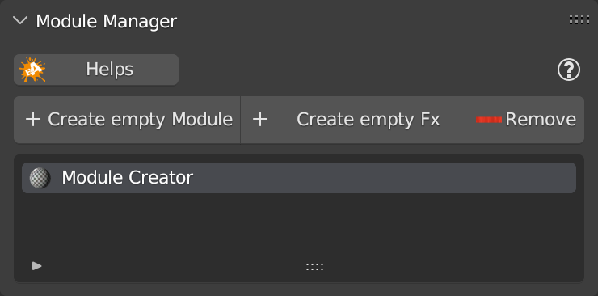
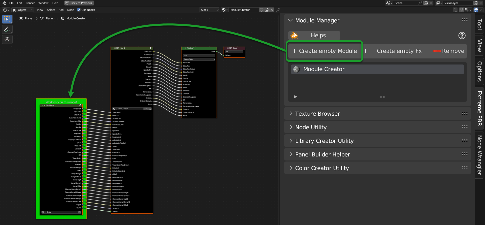
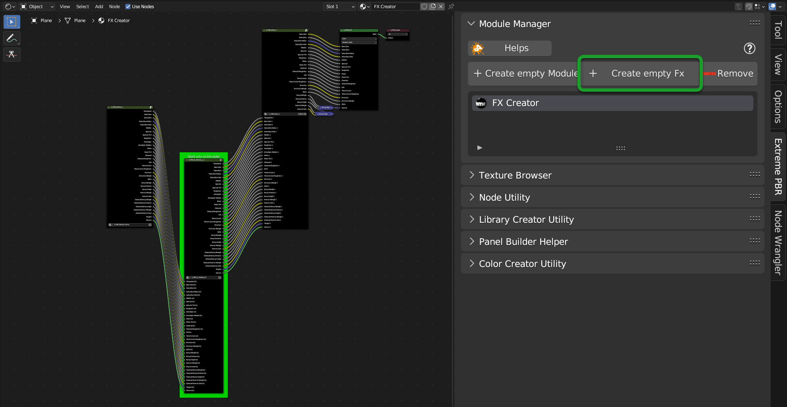
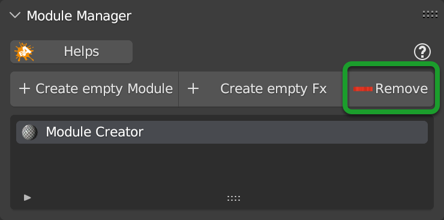
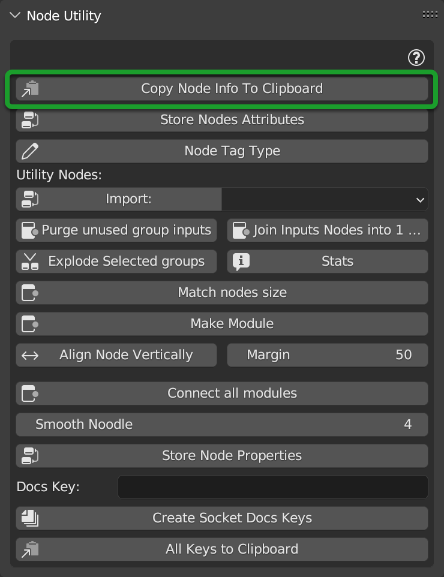
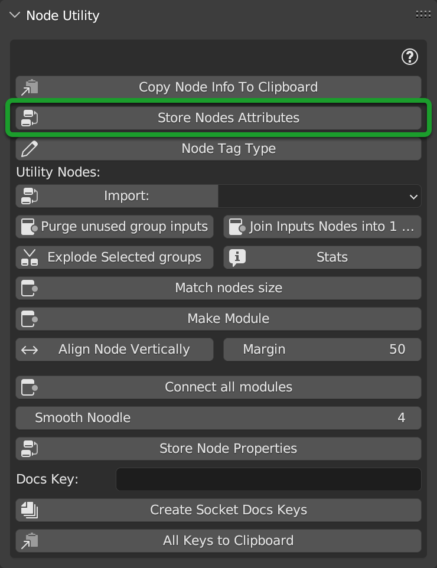
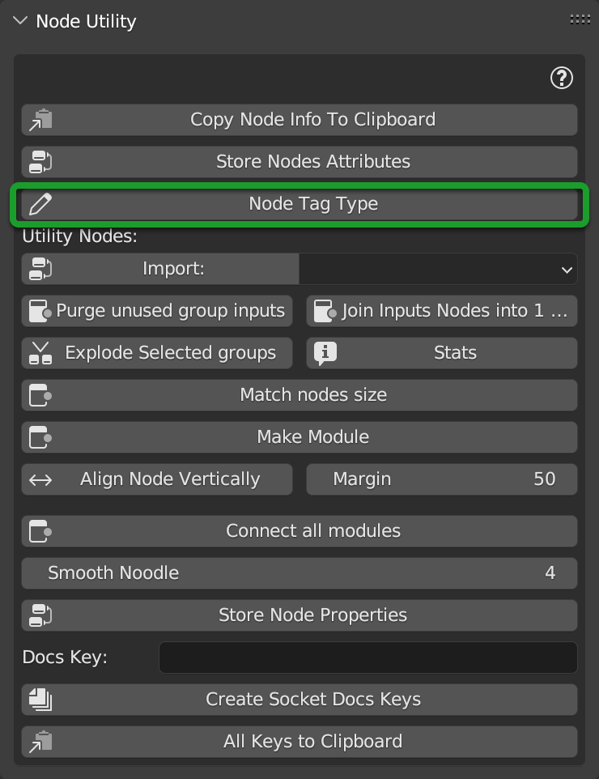
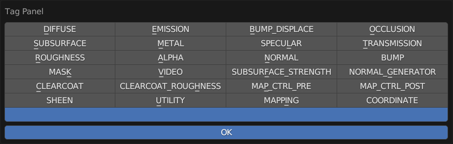
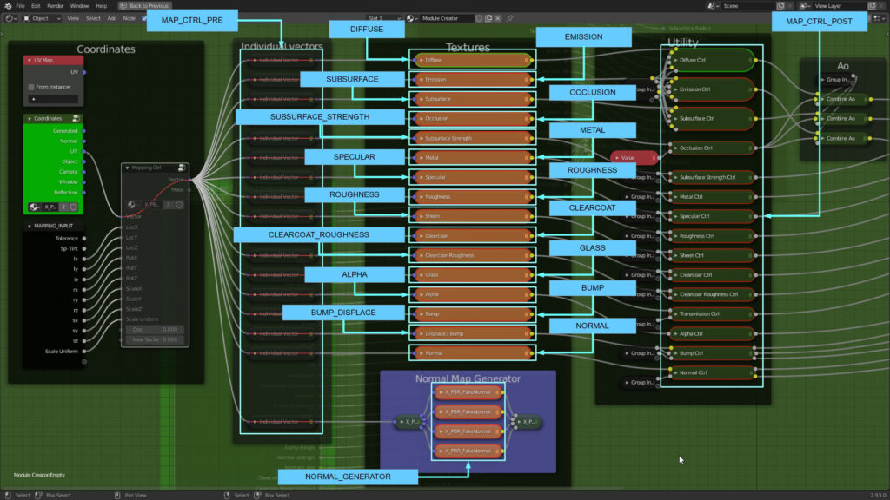
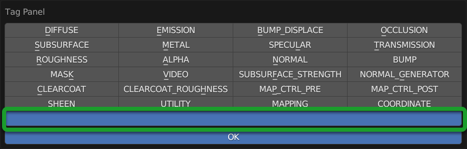

Creator Utility
Introduction
Attention
Attention, you should use this section only if you are interested in creating Materials to sell, or to create your own personal library. It is not recommended for use by end users, as it may damage the Extreme PBR Base library In order to display the creator utility, activate the option described here: Show creator utility from the preferences panel of Extreme PBR in the options tab: Options The creator utility will be shown in the Blender node interface once activated
This section is to facilitate the creation of a custom library of Extreme PBR, you can also sell this package as an additional library for Extreme PBR.
This section is dedicated to the Creator Utility the creator utility is a tool with which the libraries were created of Extreme PBR, so it is a delicate tool that could damage the main libraries of Extreme PBR.
Make sure you only use it if you want to create specific libraries for Extreme PBR.
Note
In order to access the creator utility, activate the option described here: Show creator utility from the preferences panel of Extreme PBR in the options tab: Options The creator utility will be shown in the Blender node interface once activated
{kind=link}
Module Manager Panel
{kind=link}
ADD Empty Module
This Operator creates a material with a Basic module of Extreme PBR inside from which you can start working on your material. This is done to facilitate the work of creating your library to be published.
Once you have added an “Empty Module”, in the Shader Editor, you will have a standard Extreme PBR module available to work on.
{kind=link}
Add Empty FX
This Operator creates a material with a Basic FX Module of Extreme PBR inside from which you can start working on your material. This is done to facilitate the work of creating your library to be published.
Once you have added an “Empty Fx”, in the Shader Editor, you will have a standard Extreme PBR module available to work on.
{kind=link}
Remove
{kind=link}
This button, is the equivalent of the one present in the main interface of Extreme PBR, is used to remove the active material, that is the one currently selected in the material list.
Texture Browser
TODO: The section is under construction 🚀
Node Utility
A quick look at the open “Node Utility” menu panel.
Note
This panel will only be shown if a material is active or selected.
{kind=link}
Copy Node Info To Clipboard
{kind=link}
Note
You must be inside the group node on which you want to copy the information.
This button allows you to copy the information of the group node you are working on, it will copy the name of the node and the various descriptions of the sockets, and in the clipboard it will create the documentation of the node, provided that a description has been assigned to the sockets of interest. To see how to assign a description to the sockets, go to the section here: TODO socket description reference The section is under construction 🚀
Store node attributes
{kind=link}
This button stores the information of all types of nodes in all the child nodes of the active node tree, this is used to store and if in the future there are changes in the Extreme PBR nodes, to be able to restore the “Unknown” nodes with the correct nodes, as in the future, the nodes could be no longer recognized, or vice versa, if you go from a version of Blender with new nodes, and you go back to an old version of Blender where such nodes did not exist, through the button described here Adjust All Material Node Tree you can adjust the materials that contain such unrecognized nodes.
Node Tag Type
{kind=link}
Once this button is pressed, a popup will appear:
{kind=link}
Attention
- This button works ONLY in this case:
Being inside an active material created with Extreme PBR.
Be inside an Extreme PBR Module, or FX Module.
Have a node selected and active.
Once this button is pressed, a popup will appear
From the Popup Panel it is possible to assign the TAG to the selected Texture Type node (Choose the tag and press OK).
Note
It is not necessary to use TAGs to create new Material Modules, but it is useful if you want to keep the operation of Essential Functions of the standard Extreme PBR Texture-based materials.
This Nodes example is a classic Texture Based Material from Extreme PBR with related TAGs:
{kind=link}
To Remove the TAG, press the empty button from the popup panel and Press Ok:
{kind=link}
Library Creator Utility
TODO The section is under construction 🚀
Panel Builder Helper
TODO The section is under construction 🚀
Color Creator Utility
TODO The section is under construction 🚀